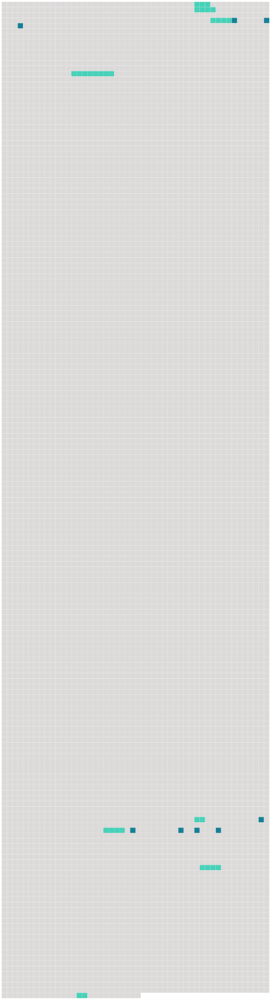

Longueur nb maillons : 17 mentions |
 |
Celle -ci était à peine née quand mourut son père, que sa mère suivit bientôt, en sorte qu’ elle resta en très bas âge, et presque sans biens, confiée aux soins de [sa grand mère] , Mme de La Flotte Hauterive. [2 phrases] Souvent, chez [Mme de La Flotte] , elle entendait parler de la cour, de cette cour brillante et agitée vers laquelle étaient tournés tous les regards, et où se décidaient les destinées de la France. [1 phrases] Sa prière fut exaucée : les affaires de [Mme de La Flotte] [l’] ayant appelée à Paris, [elle] y amena avec [elle] l’ aimable enfant, dont les grâces naissantes firent partout la plus heureuse impression. [8 phrases] En même temps il fit [Mme de La Flotte Hauterive] [dame d’ atours] à la place de Mme du Fargis, qui venait d’ être exilée. [180 phrases] La seule grâce qu’ elle consentit à recevoir, et encore de la main de la reine autant que de celle du roi, fut la survivance de la charge de dame d’ atours qu’ occupait [sa grand’mère] , Mme de La Flotte ; dès ce moment, [elle] eut le droit d’ être appelée madame, et désormais nous -même l’ appellerons ainsi. [1 phrases] Après les couches de la reine, [Mme de La Flotte] , [qui] n’ avait pas l’ humeur aussi désintéressée que [sa] petite-fille, [désira] vivement monter de [sa] place de dame d’ atours à celle de gouvernante du petit dauphin. [8 phrases] Dans cette correspondance, trouvée après la mort de Richelieu parmi ses papiers et livrée à la publicité pendant la fronde, le roi et la reine sont appelés Céphale et Procris ; Mme de Hautefort y est toujours l’ Aurore, [Mme de La Flotte] est la Vieille, Mlle de La Fayette la Délaissée, Richelieu l’ Oracle, bien entendu, et elle -même se met sous le nom du bon Ange. [21 phrases] Mme de Hautefort se retira près du Mans, dans une terre qui appartenait à [sa grand’mère] , emmenant avec elle son jeune frère, M. |
 |
La ressource peut être téléchargée sur la page Ortolang
Si vous avez des questions ou vous voyez des erreurs, merci d'envoyer un mail à silvia.federzoni89@gmail.com
Site développé par S. Federzoni (contact)